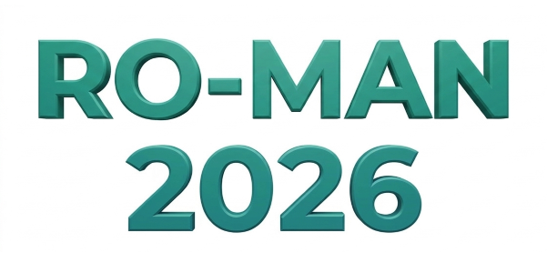
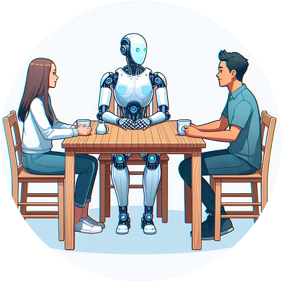
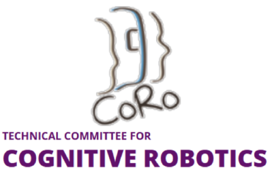
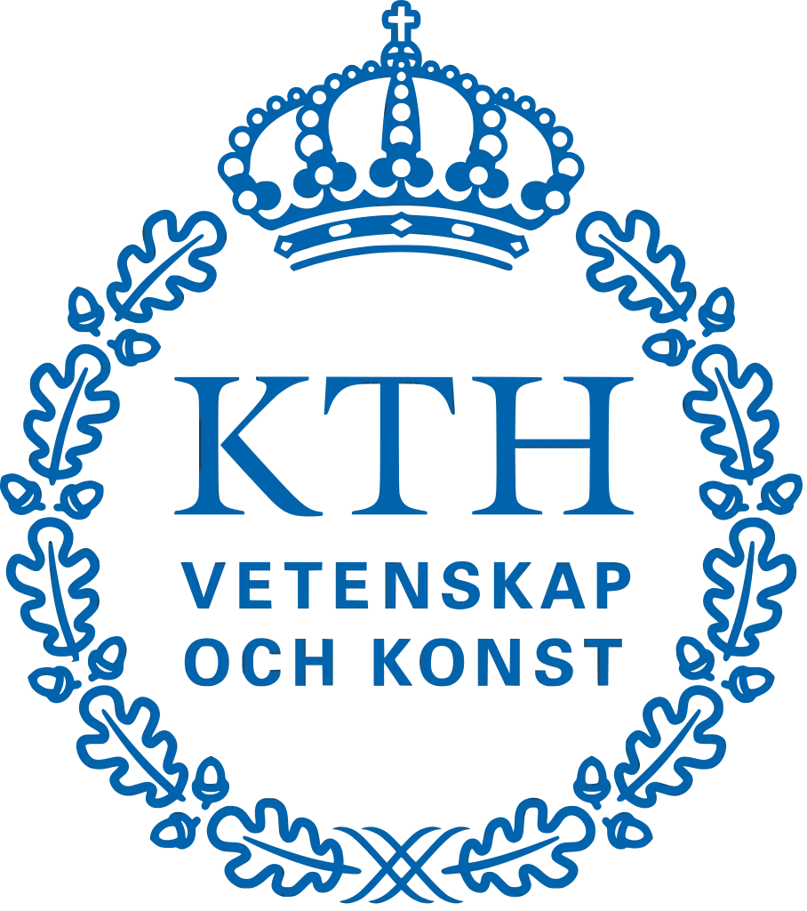
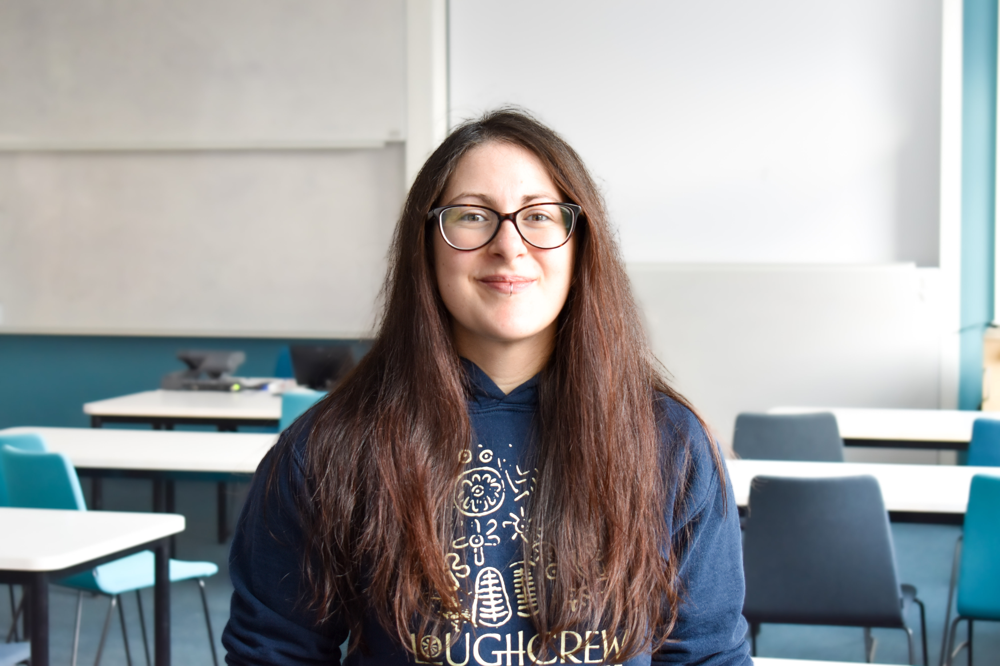
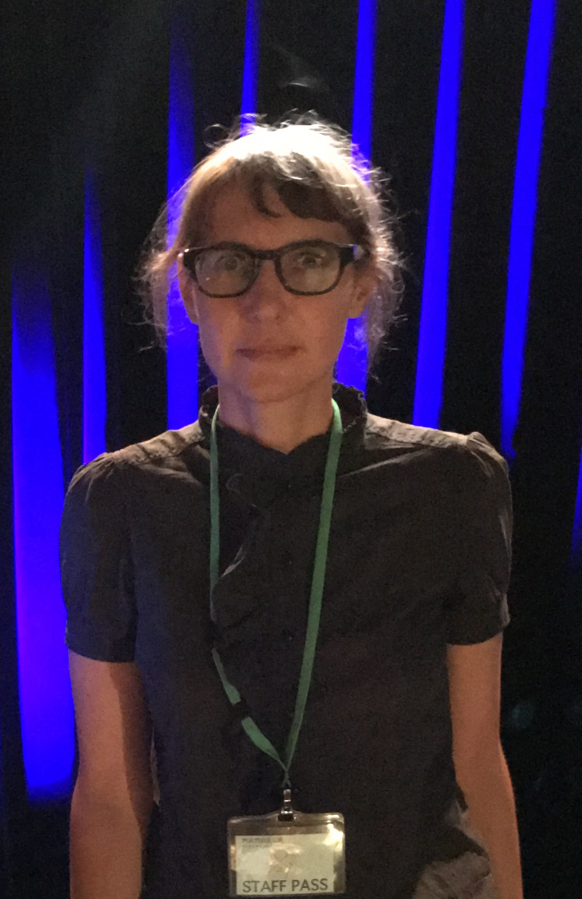

The 3rd Workshop on Nonverbal Cues for Human-Robot Cooperative Intelligence


This workshop is dedicated to discussing computational methods for sensing and recognition of nonverbal cues and internal states in the wild to realize cooperative intelligence between humans and intelligent systems. We gather researchers from different expertise, yet having the common goal, motivation, and resolve to explore and tackle this delicate issue considering the practicality of industrial applications. We are calling for papers to discuss novel methods to realize human-robot cooperative intelligence by sensing and understanding humans’ behavior, internal states, and to generate empathetic interactions.
- Human internal state inference, e.g., cognitive, emotional, intention models.
- Recognition of nonverbal cues, e.g., gaze and attention, body language, para-language.
- Multi-modal sensing fusion for scene perception.
- Nonverbal behavior generation for robots/agents, e.g., gaze salience, gesture.
- Synchronization of nonverbal and verbal behavior
- Learning algorithms, e.g., cross-embodiment and cross-context learning, imitation learning.
- Generative and adversarial algorithms to enhance human-robot interaction, e.g., LLMs, diffusion models, VLMs.
- Empathetic interaction between humans and intelligent systems.
- Robust sensing of facial and body key points.
- Social interaction dynamics modeling, e.g., harmony level, engagements.
- Personalization of intelligent systems from nonverbal cues and trust evaluation.
- Applications of cooperative intelligence in the wild.
Keywords: "Human: Face, gaze, body, pose, gesture, movement, attention, cognitivestate, emotion state, intention, empathy, Environment: Object"
Secondary subject: "Human-Robot cooperative intelligence", "Nonverbal cues recognition from audiovisual", "Human internal state inference from multi-modality", "Vision applications and systems", "Human-Object interaction and scene understanding"
Sponsors

Organizers


| May 27th | Workshop webpage was launched. |
We invite authors to submit unpublished papers (2-4 pages excluding references) to our workshop, to be presented at a workshop session upon acceptance. Submissions will undergo a peer-review process by the workshop's program committee and accepted papers will be invited to present their works at the workshop (see presentation format).
- LaTex and MS Word template: https://www.ieee.org/conferences/publishing/templates.html
- Link to EasyChair submission system: https://easychair.org/my/conference?conf=roman2026nocworkshop
- Spotlight talks (7 mins talk, Q&A in the poster session)
- In-person A0 posters for in-depth discussions
- Short pre-recorded videos (about 2 minutes) to be uploaded on the workshop webpage
- Link to arXiv: https://info.arxiv.org/help/submit/index.html
We plan a half-day event for 4 hours, including talks by four invited speakers. For participants who could not attend in person, we will disseminate the papers and pre-recorded videos on our workshop page, which also consists of a comment section for Q&A.
- 08:30 08:32 Welcome (2mins)
- 08:32 09:17 Invited talk I: Ilaria Torre, Chalmers University of Technology (45mins)
- 09:17 09:27 Opening remarks: HRI-JP President Satoshi Shigemi (15 mins)
- 09:27 10:30 Flash talks: 9 papers (total 63 mins, about 7 mins each)
- 10:30 10:50 Coffee break
- 10:50 11:35 Invited talk II Fumihide Tanaka (remote), Tsukuba University (45mins)
- 11:35 12:35 Poster session (60mins)
- 12:35 12:50 Pre-briefing of group activity
- 12:50 14:00 Lunch
- 14:00 14:45 Invited talk III Hu Yue, Waterloo University (45 mins)
- 14:45 15:10 Group activity I: Interaction with chatbot
- 15:10 15:35 Group activity II: Interaction with an AR/VR embodied agent
- 15:35 16:00 Group activitiy III: Interaction with a physical robot
- 16:00 16:20 Coffee break
- 16:20 17:20 Review and synthesis via panel discussion
- 17:20 18:05 Invited talk IV Gentiane Venture, the University of Tokyo (45 mins)
- 18:05 18:20 Closing and awards (15 mins)
Co-Existence with Intelligent Machines
At the Honda Research Institute Japan, we are conducting research on collaborative intelligence, human understanding, and robot systems. In recent years, generative AI has emerged, and AI technology is becoming more familiar in people's lives. For people and machines to coexist 24 hours a day, 365 days a year, it is essential for intelligent machine systems to understand people's feelings and act accordingly. To achieve this, we focus on human social activities, and our research targets are interactions between individuals, groups, and communities. We aim to advance people's happiness by helping them become the way they ought to be and enhancing their fulfillment. Here, we will introduce the research technologies at the Honda Research Institute to make people happy.
BiographySatoshi Shigemi is the President of Honda Research Institute Japan. Since 1987, he has been conducting research on robots and control systems at Honda R&D Co. In 2000, he was the Senior Chief Engineer and project lead for the research and development of ASIMO, the humanoid robot. He then developed a high-altitude survey robot for the Fukushima Daiichi Nuclear Power Plant. He has published many papers about human-robot interaction.
We intend to have speakers from different ethnic backgrounds, countries, and career stages. Specifically, we confirmed the attendance of four speakers.

Invited Talk I
Past the beeps and bops: sound and nonverbal communication in HRI
Sound is an often overlooked communication modality in robotics, despite being rather easy to implement and create, especially in the era of generative audio. In this talk, I will present ongoing work on nonverbal communication in Human-Robot interaction. I will show 1) how robots can use sound to communicate intuitively and efficiently in environments where speech is not ideal, such as crowded spaces, and 2) what happens when a robot's nonverbal signals don't match, for example showing one emotion in the visual channel, and another in the audio channel. This is especially relevant since many robots don't have the same degree of expressiveness in all their modalities, affecting how a multimodal emotional expression is perceived.
BiographyIlaria Torre is an Assistant Professor in Human-Robot Interaction at Chalmers University of Technology in Sweden, where she received a prestigious Wallenberg Academy Fellowship in 2025. Her research centers around improving communication between humans and robots. This includes both verbal (e.g. designing appropriate voices for robots) and nonverbal (e.g. designing legible behaviours to communicate information intuitively and effectively) communication. She is also interested in questions revolving around ethics and sustainability, for example using robotics to reduce gender stereotypes in society, and understanding the tricky relationship between environmental costs and social benefits when deploying social robots. Before joining Chalmers, she was a postdoctoral researcher at KTH Royal Institute of Technology, Sweden, and a Marie Skłodowska-Curie postdoctoral research fellow at Trinity College Dublin, Ireland, after obtaining her PhD from the University of Plymouth, UK, in 2017.
Invited Talk II
Development of Social Robots with Nonverbal Communication Capabilities
This talk discusses how robots can use nonverbal modalities beyond speech, such as weight variation, morphology, thermal expression, and physical contact cues, to foster empathy and cooperation with humans. In particular, we focus on how embodied AI systems can communicate social and emotional information through nonverbal modalities. We also discuss how this research on nonverbal communication advances our latest project, the Agentic Family System.
BiographyBSc from Waseda University, MSc and Ph.D. from Tokyo Institute of Technology Sony Corporation, Sony Intelligent Dynamics Laboratories [2003-2008] University of California, San Diego [2004-2007] University of Tokyo [2013-2014], and University of Tsukuba [2008-2013, 2014-now] Program Chair of the ACM/IEEE International Conference on Human-Robot Interaction (HRI 2027) General Chair of the ACM/IEEE International Conference on Human-Robot Interaction (HRI 2028)
Invited Talk III
Reading Human Cues for Physical Robot Collaboration
Effective human–robot collaboration requires robots to interpret more than explicit commands. Human gaze, motion, interaction forces, and physiological responses can provide important information about intention, attention, comfort, and cognitive state. This talk presents a series of studies investigating how such nonverbal cues can support adaptive robot behavior across physical human–robot interaction and teleoperation. The first part of the talk focuses on active physical human–robot interaction, where the robot’s actions directly influence the human’s physical state. We examine how interaction conditions and robot behavior affect human responses, and how objective and subjective measures can be used to better understand perceived safety, comfort, and trust. The second part considers teleoperated manipulation, including gaze-informed grasp assistance and graph-based approaches for reasoning about objects and their relationships within a scene. These studies show how combining human cues with task and environmental context can help robots infer user intent, provide appropriate assistance, and adapt the level of autonomy during interaction. These two research directions provide opportunities for multimodal human-state estimation and personalized shared autonomy in future collaborative robotic systems.
BiographyDr. Yue Hu is an Assistant Professor in Mechanical and Mechatronics Engineering at the University of Waterloo and director of the Active & Interactive Robotics Lab (AIRLab) since 2021. She holds a PhD in Computer Science from Ruprecht Karl University of Heidelberg, with postdoctoral training at Heidelberg and the Italian Institute of Technology (IIT). Prior to joining Waterloo, she held academic and research positions in Japan, including as a Japan Society for the Promotion of Sciences (JSPS) fellow at the National Institute of Advanced Industrial Science and Technology (AIST) and Assistant Professor at Tokyo University of Agriculture and Technology (TUAT). Her research bridges physical-social human-robot interaction, collaborative and humanoid robotics, and shared control and autonomy, with a recent interest in cybersecurity and privacy in robotic systems. Dr. Hu served as one of the co-chairs of the IEEE-RAS Technical Committee on Model-based Optimization for Robotics until 2025, and currently serves as one of the Associate Vice-Presidents of the IEEE-RAS Members Activities Board (MAB).

Invited Talk IV
Expressive Robot Control for Nonverbal Human-Robot Communication
Robots should move in ways that actually mean something. Not scripted gestures bolted onto a task, but real, controllable expression, the kind of subtle shift in posture or motion that tells it is paying attention, hesitating, or engaging. This talk shares what we have learned about expressive robot control: how to give robots a body language of their own, and what happens to the way people see and relate to a robot once it has one. Drawing on longitudinal work watching how people's sense of "what this robot even is" changes over weeks of interaction, the talk explores what that tells us about designing expressive motions and how ready we are to accept them.
BiographyGentiane Venture is a Professor of Robotics at the University of Tokyo, where she leads the GVLab. Her research focuses on human-robot interaction, physical AI, and how humans form relationships with and categorize intelligent agents over time. Her work spans robot motion and behavior design, and cooperative intelligence, combining robotics with interdisciplinary perspectives from ethnography and philosophy.
Humans can perceive social cues and the interaction context of another human to infer the internal states including cognitive and emotional states, empathy, and intention. This unique ability to infer internal states leads to effective social interaction between humans desirable in many intelligent systems such as collaborative and social robots, and humanmachine interaction systems. However, it is challenging for machines to perceive human states under noisy real-world settings, which are usually measured by noninvasive sensors. Recent works investigating the potential solutions for the estimation of human states under controlled conditions using facial features with the off-the-shelf camera by leveraging deep learning methods. This workshop aims to bring interdisciplinary researchers across computer vision, artificial intelligence, robotics, and human-computer interaction together to share current research achievements and discuss future research directions for human behavior and state understanding, and their potential application, especially in the wild environment. Specifically, we are interested in cognition-aware computing by integrating environment contexts and multi-modal nonverbal social cues not limited to gaze interaction, body language and para language. More importantly, we extend multi-modal human behavior research to infer the internal states of humans. This is a challenging problem yet important to realize effective interaction between humans and intelligent systems.
It is desirable for intelligent systems like robots, virtual agents, human-machine interfaces to collaborate and interact seamlessly with humans in the era of Industry 5.0, where intelligent systems must work alongside humans to perform a variety of tasks anywhere at home, factories, offices, transit, etc. The underlying technologies to achieve efficient and intelligent collaboration between humans and ubiquitous intelligent systems can be realized by cooperative intelligence, spanning interdisciplinary studies between robotics, AI, human-robot and -computer interaction, computer vision, cognitive science, etc.
One of the main considerations to achieve cooperative intelligence between humans and intelligent systems is to enable everyone and everything to know each other well, like how humans can trust or infer the implicit internal states like intention, emotion, and cognitive states of each other. The importance of empathy to facilitate human-robot interaction has been highlighted in previous studies . However, it is difficult for intelligent systems to estimate the internal states of humans because they are dependent on the complex social dynamics and environment contexts. This requires intelligent systems to be capable of sensing the multi-modal inputs, reasoning the underlying abstract knowledge, and generating the corresponding responses to collaborate and interact with humans.
There are many studies on estimating internal states of humans through measurements of wearables and non-invasive sensors, but it would be difficult to implement these solutions in the wild because of the additional sensors to be worn by humans. One promising solution is to use audiovisual data like nonverbal behavior cues consisting of gaze interaction, facial expression, body language and paralanguage to infer the internal states of humans. Researchers in cognitive and social psychology have long advocated that these nonverbal behaviors are subconsciously generated by humans and reflect the internal states of humans under different contexts. Some salient examples are the studies on emotion recognition using facial and body language in controlled environment. It remains an open question for intelligent systems to sense and recognize nonverbal cues and reason the rich underlying internal states of humans in the wild and noisy environments.